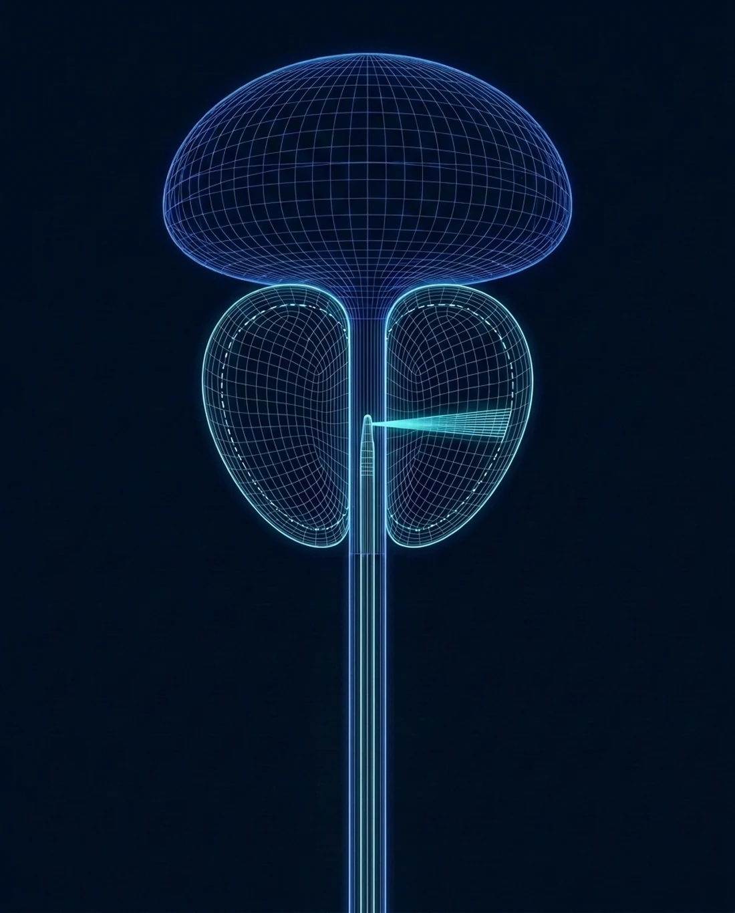

Aquablation side effects
and success rate, honestly
Every real treatment has real downsides. Dr. Sawkar has performed more than 250 Aquablation procedures, the highest volume in Orange County, and this page lays out what the published trials and that experience show: how well it works, which side effects to expect, how often each happens, and when to call.

Medically reviewed by Hari Sawkar, MD, board-certified urologist · Updated October 2026
The success rate
Aquablation was tested head to head against TURP in the randomized WATER trial, for prostates of 30 to 80 cc, with a companion study, WATER II, for large glands of 80 to 150 cc.
Relief that lasts
Symptom scores improved by about 17 points at six months and still by about 15 points at five years, matching or beating TURP, with the biggest advantage in prostates over 50 cc.
Large prostates too
In WATER II, men with 80 to 150 cc glands did as well, and about 97 in 100 were free of repeat surgery at five years.
Retreatment
About 1 in 20 men in WATER needed a repeat surgical procedure within five years, similar to TURP, and the need for any further BPH treatment, medication or surgery, was about half that after TURP.
Side effects and complications, and how often they happen
The first three rows are part of normal healing for most men. The rest are uncommon, and each has a clear plan.
| Side effect | How often | What it looks like | What helps |
|---|---|---|---|
| Blood in the urine | Expected | Pink to red urine for the first days, then on and off for one to three weeks, often briefly again around day 10 to 14 | Fluids and rest; call for clots you cannot pass or heavy bleeding |
| Burning, urgency, frequency | Common early | Strongest in the first week or two while the treated area heals | Usually settles by about three months |
| Loss of ejaculation | About 1 in 10 in the WATER trial | Dry or reduced ejaculation | About 1 in 3 lose it after TURP |
| Erections | No meaningful change on average | Men generally keep the function they had going in | Raise any concern at follow-up |
| Leakage | Early urgency leaks are common; lasting stress incontinence is rare | Small leaks with urgency in the first weeks | Pelvic floor exercises |
| Bleeding that needs treatment | Uncommon | Heavy bleeding or clots that need a return visit; transfusion ran a few percent in early large-prostate series | The treated surface is sealed with cautery at the end of the procedure |
| Catheter needed longer | A minority | Mostly men with very large glands or a weak bladder going in | Removed once you are emptying well |
| Infection or scar narrowing | A few percent | A urinary infection, or narrowing of the urethra or bladder neck | Antibiotics, or a short outpatient procedure for a narrowing |
Rates from the WATER and WATER II trials and published series, rounded for usefulness. Your own risk depends on your prostate size, bladder, and health, which the consultation reviews.
What makes complications less likely
A high-volume surgeon
The robot follows the plan, but the surgeon builds it. Dr. Sawkar has performed more than 250 Aquablation procedures, the highest volume in Orange County.
Planning from live imaging
Ultrasound maps the prostate before any tissue is removed, so the plan protects the structures behind continence and ejaculation.
Blood thinners handled in advance
Pausing them safely, with your cardiologist when needed, is planned weeks ahead. Men who cannot stop them usually look at PAE instead.
The right procedure in the first place
Dr. Sawkar also offers PAE, UroLift, and Rezūm, so Aquablation is recommended only when your anatomy and goals call for it.
When to call the office
Most of the recovery is a gradual improvement you can track at home. These are the signs that should not wait for the next scheduled visit, day or night.
Common questions about Aquablation side effects
What are the side effects of Aquablation
Blood in the urine for one to three weeks, burning and urgency that settle over weeks, and loss of ejaculation in about 1 in 10 men in the WATER trial, compared with about 1 in 3 after TURP. Erections are generally unaffected, and lasting incontinence is rare.
What is the success rate of Aquablation
In the randomized WATER trial, symptom scores improved by about 15 points and held through five years. About 1 in 20 men needed a repeat surgical procedure in that time, similar to TURP, and the need for any further BPH treatment, medication or surgery, was about half that after TURP.
How long do you bleed after Aquablation
Pink or red urine for the first few days, then on and off for two to three weeks, often with a brief return around day 10 to 14 as the healing surface sheds. Heavy bleeding, clots you cannot pass, or inability to urinate are reasons to call the office the same day.
Does Aquablation cause erectile dysfunction
Not on average. In the trials, erectile function scores did not change meaningfully after Aquablation, and men generally keep the function they had going in.
Can Aquablation cause incontinence
Lasting incontinence is rare. Urgency and small leaks are common in the first weeks while the treated area heals and usually settle within about three months; pelvic floor exercises help.
Talk through the risks for your anatomy
An in-office ultrasound and a symptom score show whether Aquablation fits, and what your own risks look like. Same-day and next-day appointments, telehealth available, Medicare and most PPO plans accepted. For the fastest response, send the office a secure message; the reply comes back by text.
Chief of Urology, Providence St. Joseph Hospital · 250+ Aquablation procedures, the most in Orange County · Every BPH option under one urologist